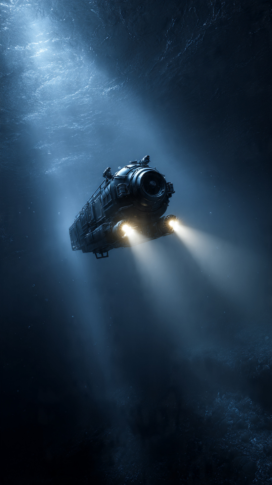
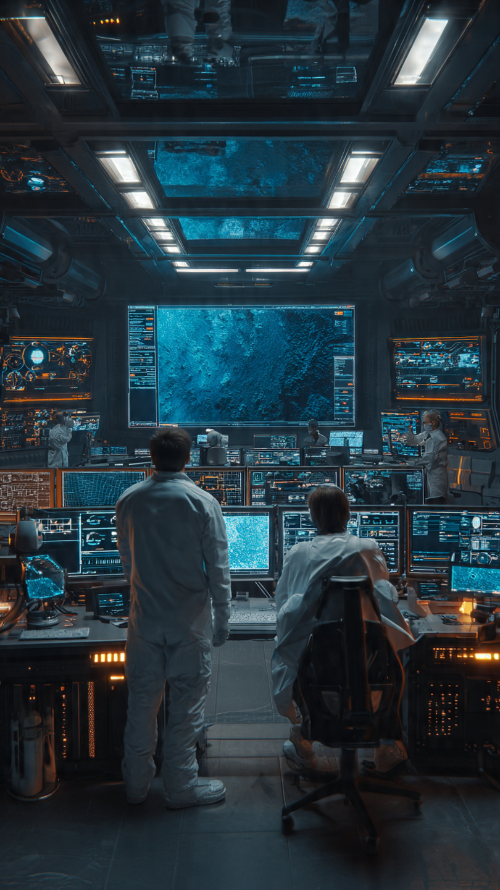

```html
رحلة إلى أعمق مكان على الأرض حيث لا يصل الضوء | اكتشافات وعلوم
```
في صباح الثالث والعشرين من يناير عام 1960، كانت أمواج المحيط الهادئ هادئة على غير عادتها.
لكن في ذلك المكان، لم يكن أحد ينظر إلى سطح الماء.
بل كانت الأنظار تتجه إلى نقطة مخفية في أعماق المحيط...
مكان لم تصله أشعة الشمس منذ ملايين السنين.
مكان لا يعرف العلماء عنه إلا القليل.
وكانت الخرائط تشير إليه باسم خندق ماريانا.
أعمق نقطة معروفة على كوكب الأرض.
كان عمقه يزيد على 11 كيلومترًا تقريبًا.
ولو وُضع جبل إيفرست، أعلى جبل على الأرض، داخله...
لاختفى بالكامل تحت سطح الماء، وبقي فوقه أكثر من كيلومترين من المياه.
كان هذا العمق مرعبًا حتى بالنسبة للعلماء.
فالضغط هناك يزيد على ألف مرة من الضغط الذي نعيشه على سطح الأرض.
أي أن أي غواصة عادية ستتحطم في ثوانٍ.
لسنوات طويلة، اعتقد كثير من الباحثين أن الوصول إلى ذلك المكان مستحيل.
فحتى لو استطاع الإنسان النزول...
فلن يستطيع العودة حيًا.
لكن اثنين من الرجال قررا أن يخوضا أخطر رحلة في تاريخ استكشاف البحار.
كان الأول هو جاك بيكار، عالم سويسري نشأ في عائلة تعشق الاستكشاف.
أما الثاني فكان ضابط البحرية الأمريكية دون والش.
جمعهما حلم واحد...
الوصول إلى قاع الأرض.
ولتحقيق هذا الحلم، بُنيت غواصة مختلفة عن أي غواصة عرفها العالم.
أُطلق عليها اسم ترييستي.
لم تكن سريعة.
ولم تكن مزودة بأسلحة.
بل صُممت لتقاوم ضغطًا هائلًا لا يمكن للعقل تخيله.
كانت مقصورة الطاقم عبارة عن كرة معدنية سميكة للغاية، لا يتجاوز قطرها مترين تقريبًا.
وهي الجزء الوحيد الذي سيجلس بداخله الرجلان طوال الرحلة.
وقبل الإبحار، سأل أحد الصحفيين جاك بيكار:
"هل تخاف من النزول إلى مكان لم يصل إليه أي إنسان؟"
ابتسم بهدوء وقال:
"الخوف طبيعي... لكن الفضول أقوى."
وبدأت عملية الغوص.
في البداية، كان كل شيء طبيعيًا.
كانت أشعة الشمس تخترق الماء، والأسماك تسبح حول الغواصة.
لكن بعد دقائق...
بدأ الضوء يختفي تدريجيًا.
ثم أصبح البحر أكثر ظلمة.
ثم اختفت الحياة التي اعتاد الإنسان رؤيتها.
وأصبح كل شيء خارج النافذة...
سوادًا لا نهاية له.
ومع استمرار الغوص...
بدأت الرحلة تتحول إلى شيء لم يكن أحد مستعدًا له.
📷 الصورة رقم 1

كلما واصلت الغواصة ترييستي هبوطها، ازداد الظلام حولها.
لم تعد أشعة الشمس قادرة على الوصول إلى هذا العمق.
حتى الكائنات البحرية أصبحت نادرة.
ولم يعد يُرى من نافذة الغواصة سوى السواد المطلق.
كان الشعور وكأنهما يغوصان في فراغ لا نهاية له.
داخل المقصورة المعدنية الصغيرة، كان جاك بيكار ودون والش يتابعان أجهزة القياس بصمت.
كل دقيقة تمر تعني ضغطًا أكبر على جدران الغواصة.
وفي تلك الأعماق، كان الضغط يعادل آلاف الأطنان على كل متر مربع.
أي خطأ صغير...
قد يحول الغواصة إلى كتلة من المعدن في لحظة.
وفجأة...
دوّى صوت انفجار قوي داخل الغواصة.
تجمّد الرجلان في مكانيهما.
نظر كل منهما إلى الآخر.
وظنّا أن الهيكل بدأ ينهار.
ساد الصمت لثوانٍ بدت وكأنها ساعات.
ثم بدآ بفحص الأجهزة بسرعة.
ولحسن الحظ، اكتشفا أن الصوت كان ناتجًا عن تشقق إحدى الطبقات الخارجية الشفافة، بينما بقيت المقصورة الرئيسية سليمة.
قرر الرجلان الاستمرار.
فالعودة الآن تعني ضياع فرصة لن تتكرر.
استمرت الغواصة في الهبوط لساعات طويلة.
ثم...
بدأ القاع يظهر ببطء.
كانت طبقة من الرواسب الناعمة تغطي الأرض، وكأنها صحراء هادئة في عالم آخر.
ولدهشتهما، لم يكن المكان خاليًا من الحياة.
شاهدا مخلوقات بحرية صغيرة تعيش في هذا العمق الهائل، رغم الظلام والضغط القاتل.
كان ذلك دليلًا على أن الحياة تستطيع الوجود في أماكن ظن الإنسان أنها مستحيلة.
وصلت الغواصة إلى عمق يقارب 10,916 مترًا، وهو أعمق نزول حققه الإنسان في ذلك الوقت.
بقيا في القاع نحو عشرين دقيقة فقط.
لكن تلك الدقائق كانت كافية لتسجيل واحدة من أعظم لحظات الاستكشاف في تاريخ البشرية.
ومع ذلك...
لم تكن أسرار خندق ماريانا قد كُشفت كلها بعد.
بل كانت المفاجآت الحقيقية تنتظر العلماء في العقود التالية.
📷 الصورة رقم 2

بعد رحلة الغواصة ترييستي، اعتقد البعض أن أسرار خندق ماريانا قد كُشفت.
لكن الحقيقة كانت عكس ذلك تمامًا.
فما رآه العالمان خلال دقائق قليلة لم يكن سوى بداية قصة ما زالت مستمرة حتى اليوم.
وفي العقود التالية، عادت بعثات علمية وغواصات آلية مزودة بكاميرات وأجهزة حديثة لاستكشاف الأعماق مرة أخرى.
وكانت المفاجآت أكبر مما توقع الجميع.
اكتشف العلماء كائنات بحرية تعيش في ظلامٍ كامل، دون أي ضوء من الشمس.
بعضها شفاف تمامًا.
وبعضها يملك أعضاءً تصدر ضوءًا حيويًا يساعده على الصيد أو التواصل.
كما عُثر على أنواع من القشريات والديدان والأسماك استطاعت التكيف مع ضغط هائل كان يُعتقد أنه لا يسمح بوجود أي حياة.
كل اكتشاف جديد كان يغيّر ما نعرفه عن حدود الحياة على الأرض.
لكن المفاجأة لم تكن إيجابية دائمًا.
ففي السنوات الأخيرة، وجد الباحثون آثارًا للبلاستيك الدقيق ومواد كيميائية ملوثة حتى في أعمق نقطة في المحيط.
كان ذلك صادمًا.
فحتى المكان الذي لم تصله أشعة الشمس منذ ملايين السنين...
وصلت إليه آثار الإنسان.
وأصبح خندق ماريانا دليلًا على أن تأثير النشاط البشري يمتد إلى أبعد مما نتخيل.
ورغم التقدم الهائل في التكنولوجيا، فإن العلماء يؤكدون أننا لم نستكشف سوى جزء صغير جدًا من أعماق المحيطات.
فما زالت هناك مناطق واسعة لم تُصوَّر بالكامل، وكائنات لم تُكتشف بعد، وأسرار جيولوجية قد تساعدنا على فهم تكوين الأرض بشكل أفضل.
ولهذا يصف بعض الباحثين أعماق المحيط بأنها أقل استكشافًا من سطح القمر.
واليوم، يقف خندق ماريانا رمزًا لفضول الإنسان.
فكلما اعتقدنا أننا وصلنا إلى نهاية المعرفة...
اكتشفنا أن هناك عالماً آخر ينتظر من يغامر بالبحث عنه.
وهكذا بدأت القصة برحلة رجلين داخل غواصة صغيرة.
لكنها تحولت إلى رحلة لا تزال البشرية تواصلها حتى الآن، بحثًا عن أسرار أعمق مكان معروف على كوكب الأرض.